一颗毛茸茸的"球球"，被孩子们团团围住。
一个孩子把同一个问题问了一遍、两遍、十几遍，球球依然眨着圆圆的眼睛，一次又一次认真回答。
这样的画面，在过去半年里反复出现。
从春天到秋天，超级球球跟随超级有爱的老师高丽春，持续走进“壹基金海洋天堂计划——支付宝公益星社区家庭支援中心”的公益课堂，陪伴孤独症儿童完成了整整12期融合绘本活动。
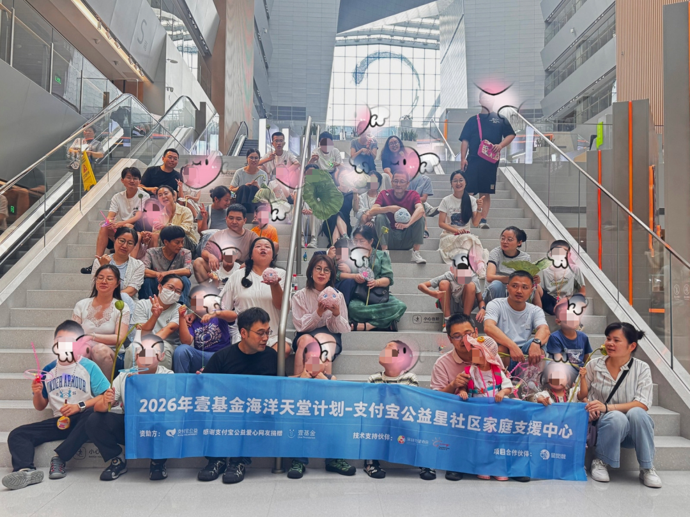
这不是一次产品体验，也不是一场短暂的公益展示。
半年、12期、一次次真实课堂，让我们第一次如此持续地看到：当一个不会不耐烦、可以反复回应、愿意等待孩子的AI伙伴进入孤独症儿童的日常学习场景，会发生什么。
我们也第一次更清楚地看到，超级球球哪些能力天然适合这些孩子，又有哪些地方，还需要为他们重新设计。
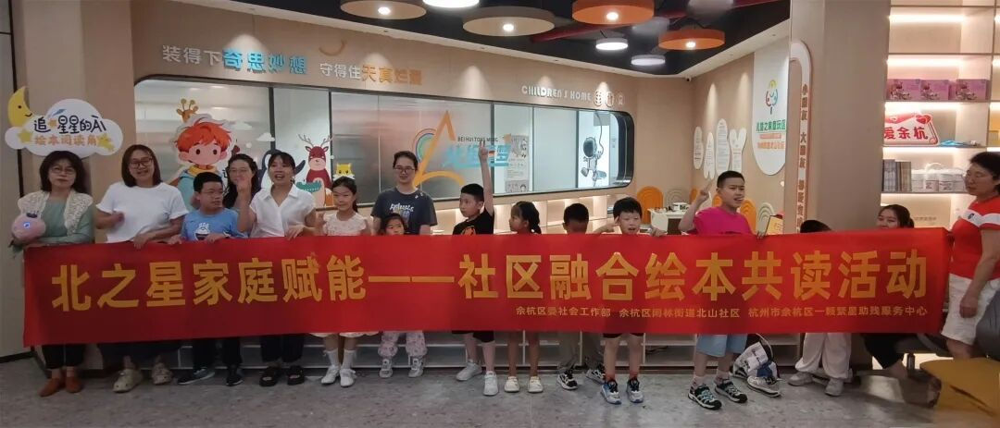
缘起：一次合作，开启半年之约
这段故事，开始于一次公益合作。
超级有爱与杭州余杭区融爱中心建立合作后，超级球球受邀走进“壹基金海洋天堂计划——支付宝公益星社区家庭支援中心”系列公益课堂。
原本只是一次新的尝试，却变成了一场持续半年的陪伴。
从第一堂课到第十二堂课，超级球球跟着超级有爱的高丽春老师，一次次走进“星星的孩子”中间，和老师、孩子们一起完成了整整12次公益课堂。
这12期课程依托阿里巴巴公益绘本工具“追星星的AI”展开。它可以根据简单的故事梗概生成图文并茂、支持朗读的个性化绘本，把洗头、情绪表达、整理玩具等日常问题，转化成孩子更容易理解的故事。
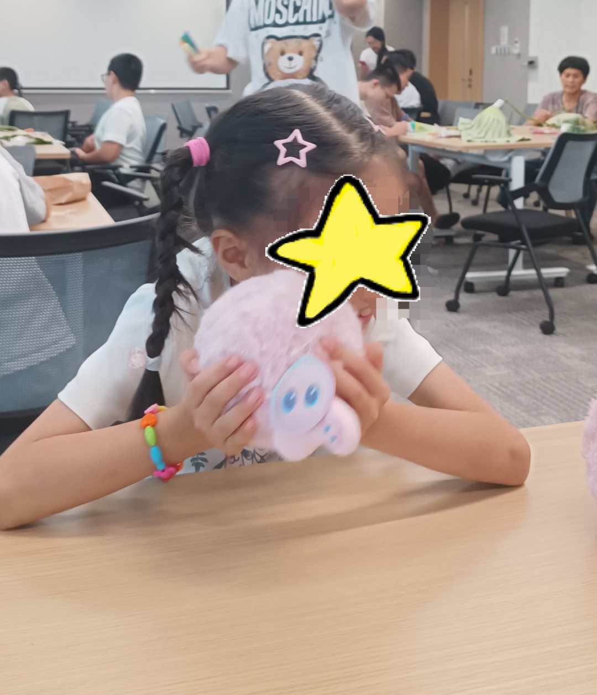
而超级球球，则成为了绘本之外的另一个“互动入口”。
作为一款AI儿童成长陪伴机器人，球球可以不断回应孩子的问题、重复知识点、播放儿歌，也可以用一问一答的方式，把绘本中的内容进一步变成真实互动。
于是，原本静态的绘本故事，开始有了声音、有了回应，也有了一个可以被孩子摸一摸、抱一抱、随时开口说话的伙伴。
半年里，12期课堂围绕整理收纳、爱护牙齿、认识红绿灯等孩子们熟悉的日常生活场景展开。
比如《玩具也要回家》这一期，孩子们通过绘本和“送玩具宝宝回家”的游戏，在故事和互动中理解“收纳”。对这些孩子来说，很多知识需要通过反复看见、听见和体验来理解。而球球的互动与重复能力，也恰好参与其中。
在余杭区委社会工作部、闲林街道北山社区、余杭区一颗星助残服务中心等多方支持下，一场场“社区融合绘本共读”，一点一点变成了真实发生的课堂。
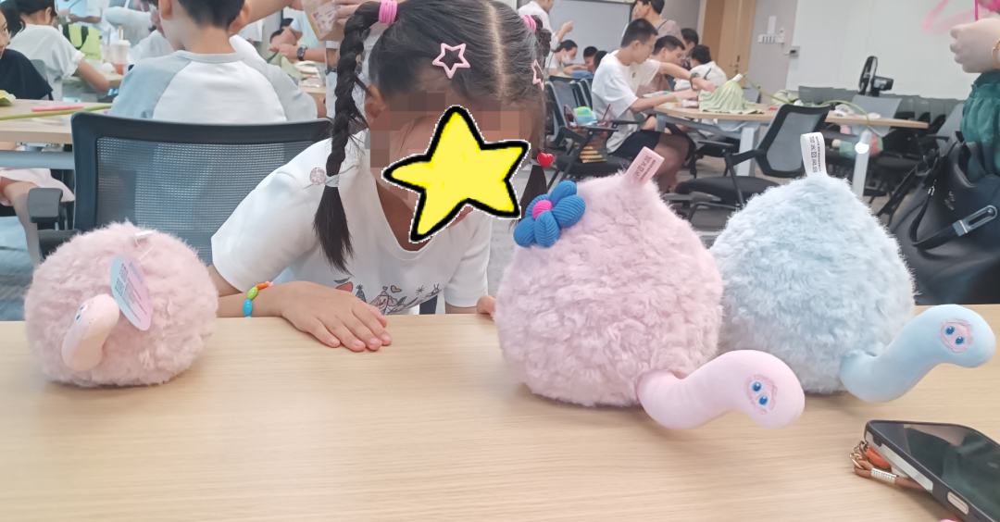
课堂上的球球：不是主角，而是一个特别的“助教”
在12期课堂里，球球有一个特殊的身份——AI助教。
它并不替代老师，也不是课堂的主角。它更多是在孩子需要的时候，成为那个可以随时回应、不断重复、帮助老师把课堂继续推进下去的“加强辅助”。
而每一次进入课堂之前，这位AI助教也是需要提前“备课”的。高丽春老师会先和主讲老师沟通当期主题、课程流程和重点知识，再根据课堂设计提前和球球进行沟通、测试：
哪些问题适合让球球先问？
哪些知识点可以通过球球重复？
哪一段可以配合儿歌？
孩子可能会怎么回应？
老师们会一次次提前磨合。
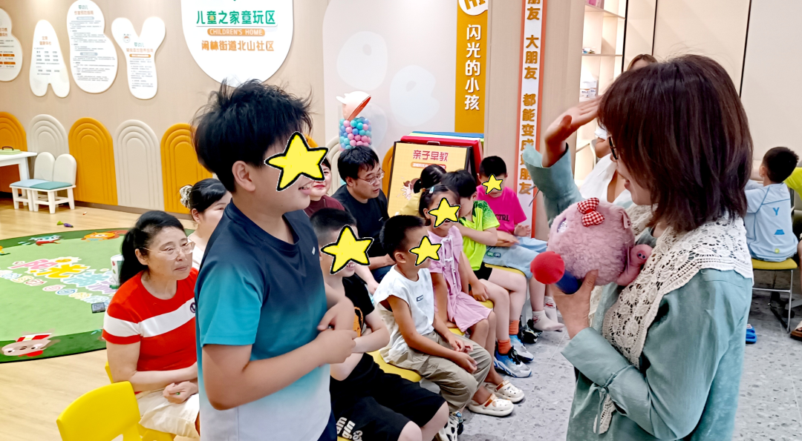
在“爱护牙齿”那一期，课堂从球球的一个问题开始：“牙齿的作用有哪些？”球球引导孩子思考回答之后，主讲老师会进行解释，再邀请孩子参与讨论。答对了，可以得到一架纸飞机，或者一个奖励印章。
为了让球球真正融入课程，而不是简单地放在课堂里“展示”，主讲老师提前设计好了它参与的环节：“有两个地方要加入球球，我在家提前试过了，球球都能做到。”
于是课堂上，球球会播放《刷牙歌》，会参与牙齿健康问答，也会在老师需要的时候反复讲解同一个知识点。
在“认识红绿灯”这一期，为了配合孩子们“跟着信号灯行走”的游戏，高丽春老师又提前在家里一遍遍测试球球：
“红灯——黄灯——绿灯——黄灯——红灯……”为的是让球球循环播报的速度，刚好跟得上孩子们走、停、再走的节奏。
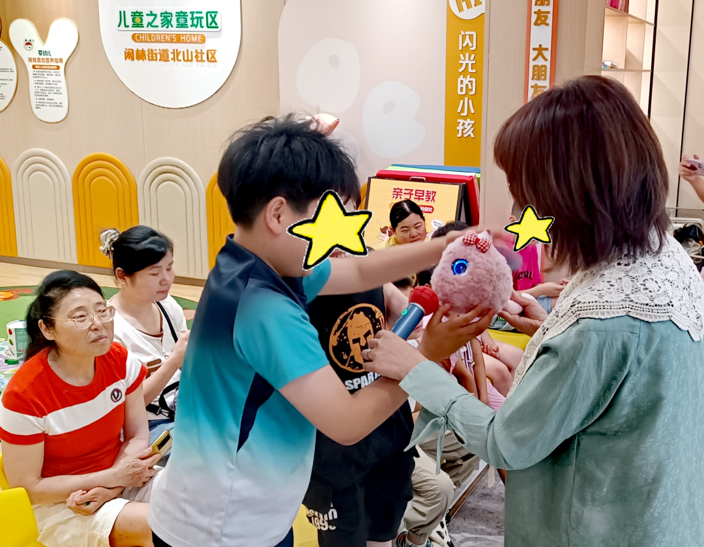
课堂上，球球还把交通规则变成孩子熟悉的儿歌：“红灯停，绿灯行，黄灯等一等。”孩子们听着声音，跟着走一走、停一停。
就这样，一期又一期，老师和球球不断寻找最合适的配合方式。
有时候，球球是先提问的那一个；
有时候，它负责重复孩子需要掌握的知识；
有时候，它只是陪孩子说话；
有时候，它通过儿歌和互动，帮助老师重新把孩子的注意力带回课堂。
12期课里，它助教的方式一直在进化。但有一件事始终没有变：它可以一遍又一遍地重复，而且不会不耐烦。
半年后回头看，这一点，恰恰成为了球球与这群孩子之间最特别的连接之一。
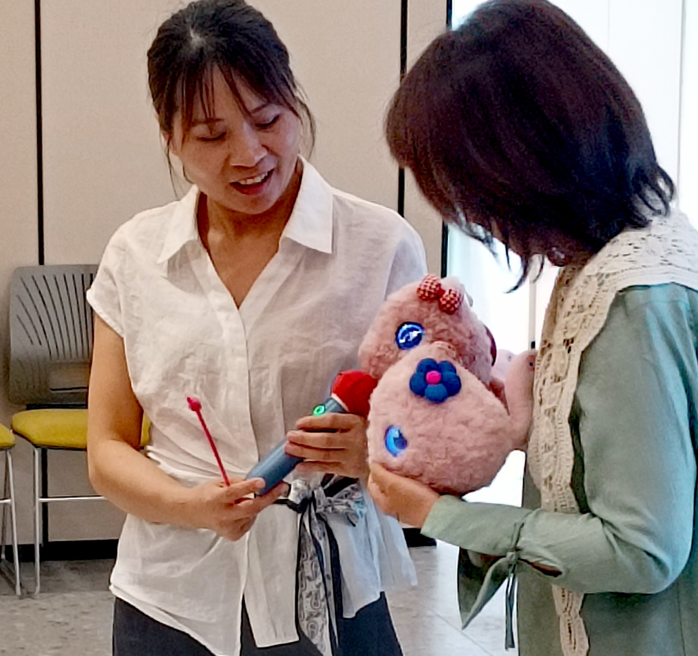
孩子们的变化：从远远地看，到“我认识球球”
第一次见面的时候，并没有想象中的热闹。开课前，主讲老师就提前告诉大家：“现场有一些孩子能力相对弱，有些孩子还不太会表达。”
第一堂课上，很多孩子只是安安静静地坐着。他们远远看着这个会眨眼睛、会说话的毛茸茸的小家伙，却没有马上走过来。
球球也没有急着要求他们做什么。它只是待在那里。慢慢地，有孩子开始靠近一点。后来，有人愿意伸手摸摸它。再后来，有孩子开始主动跟它说话。
这种变化并不是发生在一节课里的。而是在一次次见面、一堂堂课里慢慢发生的。
半年、12期，让“第一次见到一个陌生机器人”，逐渐变成了“我认识球球”。
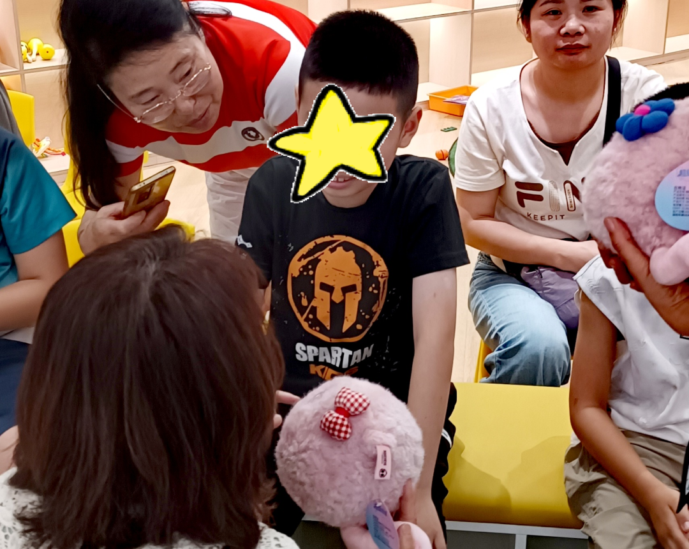
高丽春老师印象很深的是，有些孩子会反复问同一个问题。
一个问题可能会问很多遍，甚至十几遍。对于成人来说，这样的重复很容易消耗耐心。但球球不会。
“他问一遍，球球就回答一遍；再问，球球还是认真回答。它不会觉得‘这个问题你不是已经问过了吗’。”对一些孩子来说，这种重复并不是多余的。它可能恰恰是他们理解世界、获得确定感的一种方式。
还有一些孩子很少主动和人交流，但面对球球时，却愿意尝试开口。没有复杂的表情压力，没有“我是不是说错了”的担心，也不需要立即理解复杂的社交暗示。想说的时候就说一句，不想说的时候，也可以只是坐在旁边。
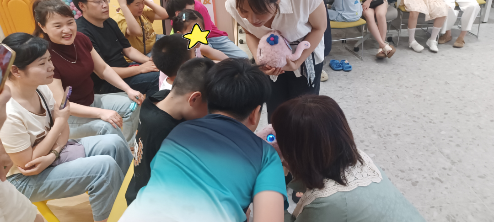
当然，每一个孤独症儿童都是不同的。有的孩子喜欢球球，有的孩子需要更长时间适应；有的孩子愿意主动表达，也有的孩子仍然很少说话。
但半年课堂里，一个越来越明显的现象是：对于一部分孩子来说，球球提供了一个比传统人际互动更低压力、更稳定，也更容易靠近的交流入口。
在“爱护牙齿”那堂课上，一些平时很难长时间坐住的孩子，跟着球球的互动和游戏，认真参与了很长一段时间。
对于老师来说，这并不意味着AI可以替代专业教育。恰恰相反——真正有效的课堂，始终来自“老师+工具”的配合。老师理解孩子、观察孩子，设计课程，并根据现场情况调整节奏；球球则提供稳定、持续和可重复的互动。
每一堂课，都是老师和球球一起努力的结果。
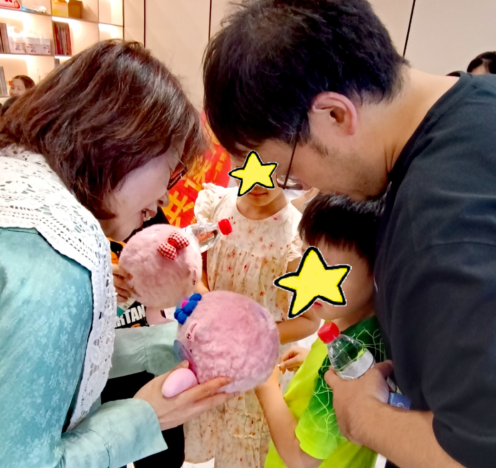
半年课堂：让我们看见一种“意料之外的适配”
最初进入这个项目时，超级球球并不是一款专门为孤独症儿童设计的产品。它最初面向的是普通儿童家庭。但半年、12期真实课堂之后，团队逐渐发现：一些原本为普通儿童设计的能力，在孤独症儿童课堂里，却表现出了一种意料之外的适配。
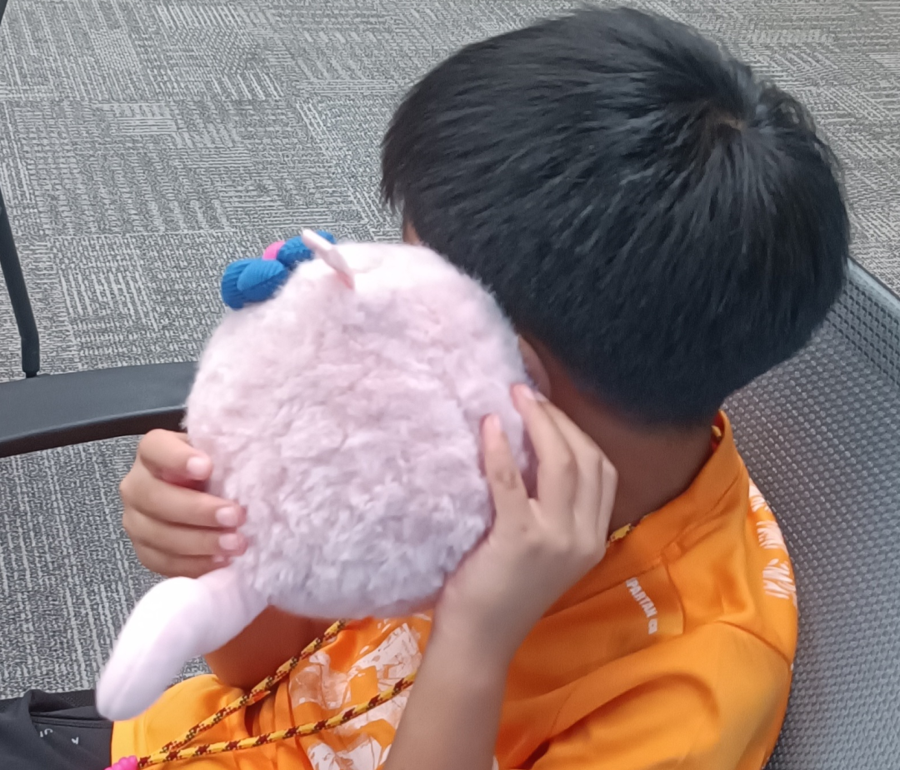
这种适配首先来自耐心：孩子可以把同一个问题问十遍，球球依然会回答第十一遍。
其次是稳定：同一个问题，可以得到相对稳定的反馈；同一首歌、同一句提醒，可以按照需要不断重复。
再来是低压力：它不会催促孩子“你快一点回答”，也不会因为孩子不看它、不说话而表现出尴尬或者失望。
以及可重复：一个知识点没有听懂，可以再来一遍。一首儿歌没有跟上，可以重新播放。一句话孩子没有回应，球球也可以安静地等待下一次互动。
对于很多普通孩子来说，这些可能只是一个AI陪伴产品的基本体验。但到了特殊儿童课堂里，这些原本不起眼的产品特性，却显示出了不一样的价值。
这也是半年真实实践带给团队很重要的一次认识：所谓“适配”，有时候并不是给特殊儿童增加更多功能，而是能不能允许孩子按照自己的节奏，与世界发生连接。
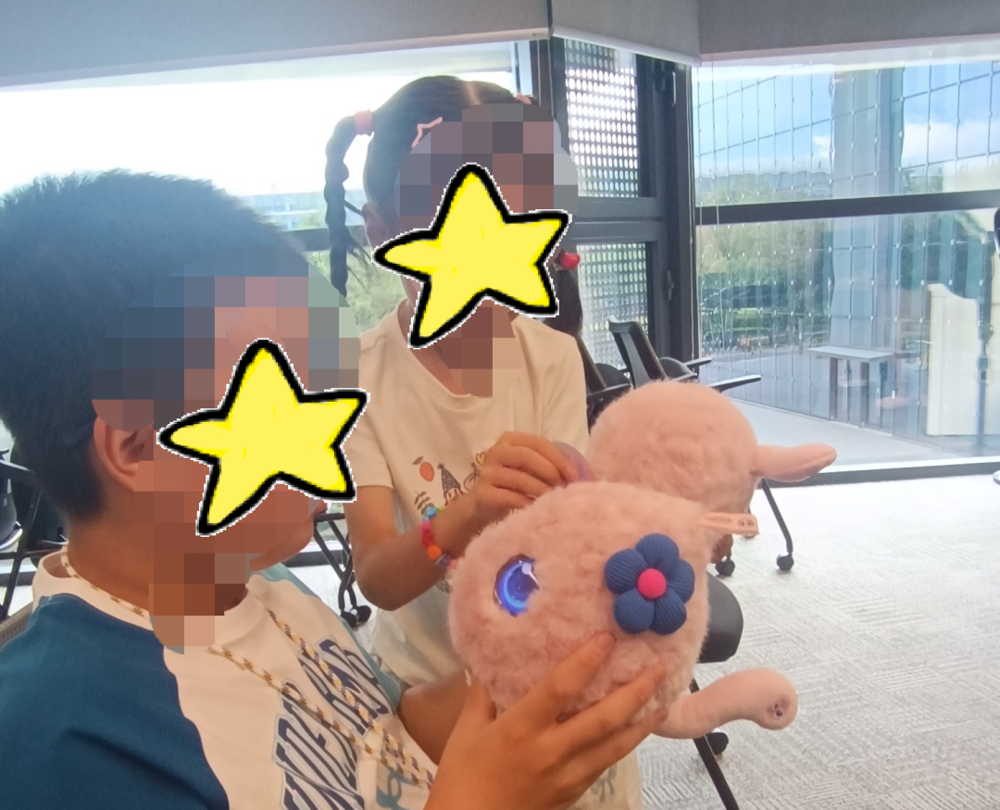
半年之后：从“天然适配”，到“为他们进一步优化”
12期课堂结束后，高丽春老师和团队开始重新审视超级球球与孤独症儿童之间的关系。
除了发现球球的能力在孤独症儿童陪伴上表现出了明显的适配性外，另一份收获来自孩子们、家长们、老师们对产品提出的更多期待。
“我们现在的产品是面向大众儿童设计的。如果未来针对孤独症儿童做更深入的应用，在对话长度、语言复杂度、反馈节奏、操作方式等方面，都应该进一步简化和个性化。”高丽春说。
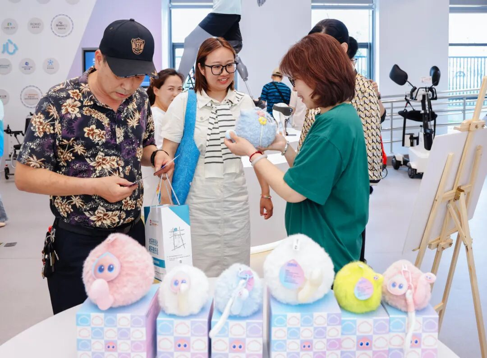
比如，有些孩子需要更短、更清晰的表达；有些孩子对声音、节奏和重复次数有自己的偏好；还有一些操作，目前仍需要老师或家长协助完成。
这些在普通家庭场景里不一定有明显的问题，到了真实的特殊儿童课堂中，被一一放大、看见。
也因此，这12期公益课堂对于超级有爱的意义，不只是验证“球球能做什么”，更是在帮助团队回答另一个问题：如果真正要服务于这些孩子，产品应该如何优化？
超级有爱的CEO元晓帅博士说： “孩子们不只是产品的使用者，也是产品进化过程中，我们最宝贵的老师。”
这也是半年实践最重要的价值之一：把技术带进真实场景，再让真实的人和真实的需求，重新定义技术应该成为的样子。
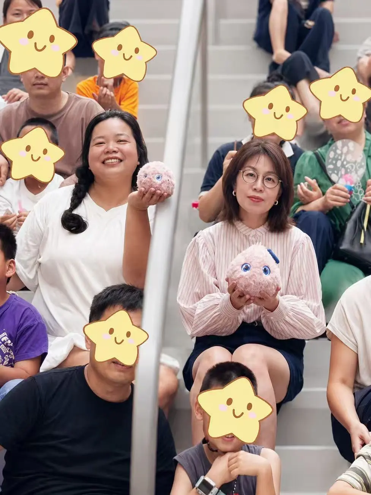
公益的下一步：不只是把球球送进去
12期活动之后，还有一个问题始终摆在团队面前：如何让这样的陪伴持续下去？
在长期接触过程中，高丽春老师和团队也越来越深地了解到孤独症家庭面对的现实困难： 很多家庭需要长期承担教育、康复和照护压力。随着孩子年龄增长，问题也会发生变化：低龄阶段，父母还能够给予大量照顾；而当父母逐渐老去，大龄孤独症群体的生活支持、社会融入和长期照护，也成为一个越来越值得关注的问题。
这也许不是一款产品能够解决的问题。也不是一次公益活动能够解决的问题。但对于一家做儿童AI、做情感交互的企业来说，它提出了一个值得长期思考的问题：
技术能够在其中多做一点什么？
答案也许并不是“用AI替代谁”。而是能不能让老师多一个工具，让家长多一点支持，让孩子多一个愿意回应他的伙伴。能不能通过技术，把专业服务之外那些大量、重复、日常的陪伴，变得更容易获得一点。
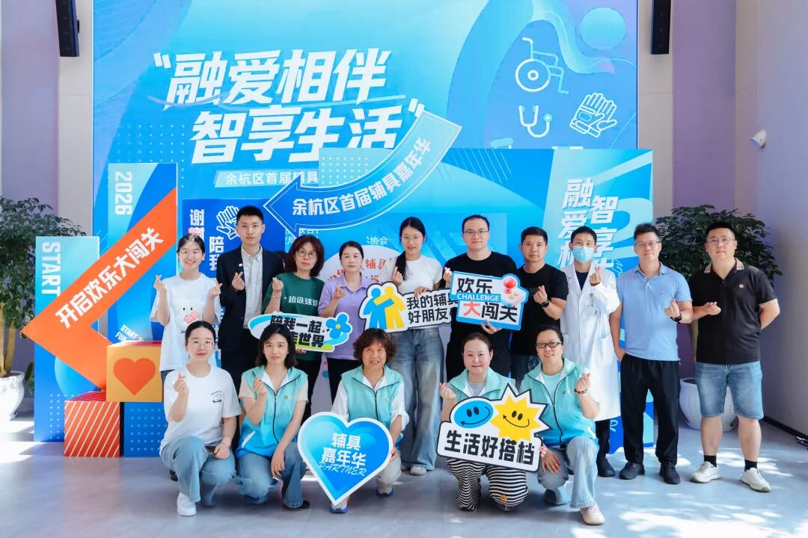
这也是超级有爱希望继续探索的方向。
公益不应该只是一次捐赠、一次活动，或者一张合影。真正有价值的公益，也可以是一场长期的共同实践：
企业把技术带进真实场景；
老师告诉我们什么真正有用；
家长告诉我们什么仍然困难；
而孩子，则用最真实的反应告诉我们，产品应该怎样继续改变。
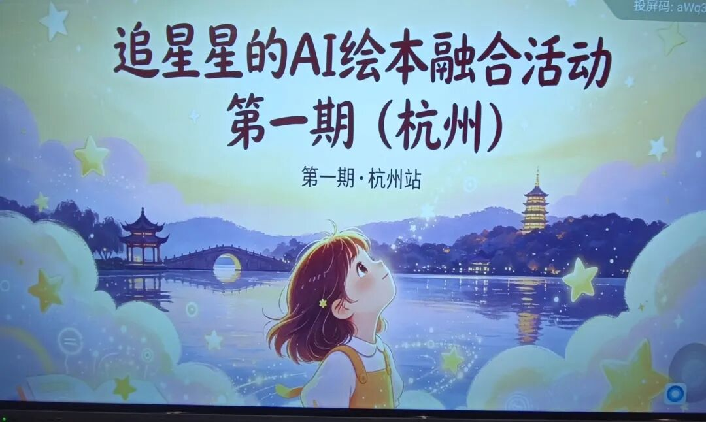
写在最后
半年，12期。
从第一次远远地看着球球，到有人愿意伸手摸摸它，再到主动跑过来和它说一天的话。
这些变化很小。小到也许很难用一个数字去证明什么。但对于陪伴这些孩子的人来说，每一次主动靠近、每一句愿意说出口的话，都值得被认真看见。
这半年，也让我们越来越确定：技术真正有意义的地方，并不是它能替人做多少事情。
而是当一个孩子需要更多时间、更多重复、更多耐心的时候，它能不能依然在那里。不催促，不厌烦，也不急着定义。
AI真正的温度，不是它能说多少话，而是它愿不愿意按照每一个孩子自己的节奏，耐心地等他开口。
12期课堂结束了。但超级球球和“星星的孩子”之间的故事，才刚刚开始！

—— 完 ——